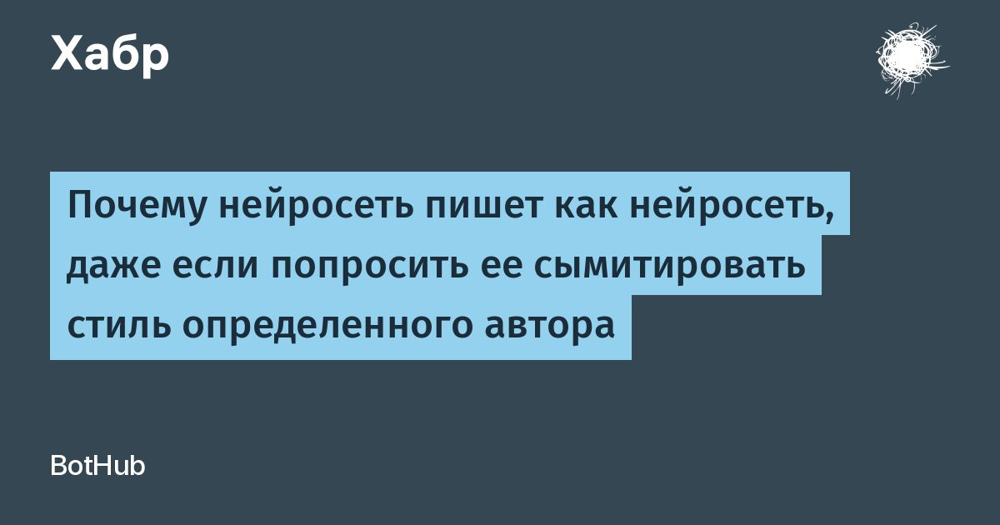

Почему нейросеть пишет как нейросеть, даже если попросить ее сымитировать стиль определенного автора
Стиль складывается из слов, ритма фраз, внимания к деталям.
У нейросети тоже есть почерк.
Она все объяснит, выделит главное и повторит его в конце на случай, если мы отвлеклись.
После просьбы «напиши как Чехов» интонация может измениться, а привычка объяснять каждый жест героя — остаться.
Посмотрим, откуда берутся привычки нейрописьма и что просьба сменить стиль меняет внутри модели и в готовом рассказе.
Читать далее